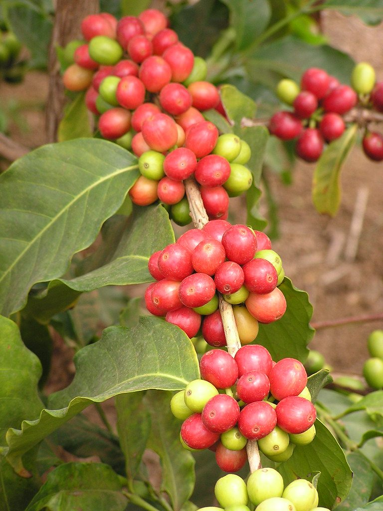

店のこと
注ぐ順に、三つ。
お店について確認できているのは、所在地・電話番号・Instagramのアカウントです。順番に整理しました。
- 1
確認できていること
- 店名は「HARUNI」、業種はカフェ
- 所在地は岡山県倉敷市新田2943(〒710-0038)
- 電話番号は 086-424-0509
- Instagramのアカウントは @haruni_teacoffeecake
- 2
まだ分からないこと
営業時間・定休日・メニュー・価格・ご予約・駐車場は準備中です。店名の意味や由来も分かっていません。分かり次第、お店のご確認のうえで掲載します。
- 3
制作側の連想
Instagramのアカウント名に tea・coffee・cake の文字があります。そこから制作側は、紅茶とコーヒーとお菓子を、どの順で味わうのだろう、と想像しました。制作側の連想で、お店の理念・由来とは無関係です。実際に何を出しているかはお店にご確認のうえ掲載します。
材料の写真(イメージ)
カップの手前にあるもの
コーヒーやチョコレートの材料を写したフリー素材です。お店で使っているものを示すものではありません。
